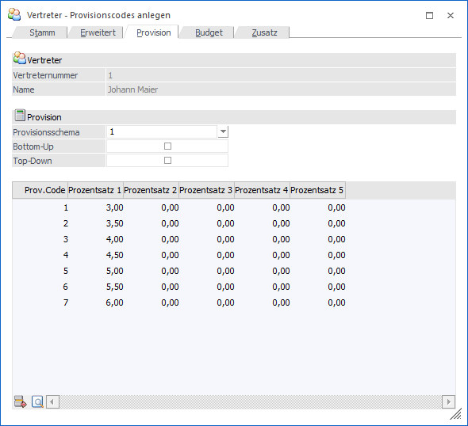
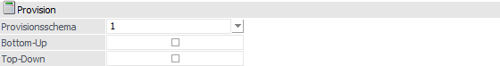
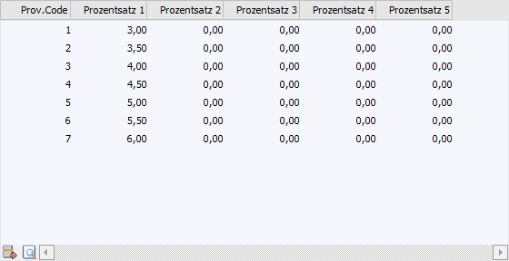
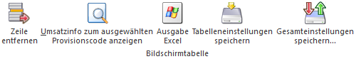

In dem Register "Provision" können dem Vertreter bzw. der Vertretergruppe beliebig viele Provisionscodes (abgekürzt mit "PC") anlegen. Der Provisionscode ist vertreterbezogenen Provisionssätzen zugeordnet. D.h. ein Provisionscode kann bei verschiedenen Vertretern verschiedene Provisionssätze bedeuten.
Beispiel
Provisionscode 5 bedeutet bei Vertreter 12 den Provisionssatz von 14%, bei Vertreter 15 den Provisionssatz von 12%. Dadurch erhält der Vertreter 12 14% der mit Provisionscode 5 erzielten Umsätze, Vertreter 15 erhält 12% der mit Provisionscode 5 erzielten Umsätze.
Achtung
Wenn Sie Provisionssätze mit negativen Vorzeichen eingeben, erhält der Vertreter einen negativen Provisionsbetrag, der ihm von der gesamten Provision abgezogen wird.

Die Umsatzbasis, sowie der Provisionsprozentsatz, ermitteln sich auf Grundlage folgender Einstellungen:
ü Provisionsschema im Vertreterstamm
(Register "Provision")
Durch die Angabe eines Provisionsschemas wird
angegeben, aus welcher Spalte (1 bis 5) die %-Sätze genommen werden sollen.
ü Provisionscodes im Vertreterstamm
(Register "Provision")
Im Vertreterstamm werden in der Provisionstabelle die
Provisionscodes samt Provisionsprozentsatz hinterlegt.
ü Provisionscode im Artikelstamm
(Register "Preise")
Der Provisionscode wird im Register "Preise" Artikelstamm
(Unterregister "Preise) in dem Feld "Provisionscode" hinterlegt.
Neben der
allgemeinen Zuweisung eines PCs pro Artikel, kann auch pro Preiszeile des
Artikels (Preistabelle) ein individueller PC zugewiesen werden
Hinweis
Der Provisionscode wird gemäß Hinterlegung im Artikel in die Belegerfassung übergeben und kann dort manuell verändert werden.
ü Vertreter im Personenkontenstamm
(Register "FAKT")
In den Personenkonten wird der Vertreter, welcher bei
Fakturen mit einer Provision bedacht werden soll, in dem Feld "Vertreter"
hinterlegt.
Hinweis
Der Vertreter wird gemäß Hinterlegung im Personenkonto in die Belegerfassung übergeben und kann dort manuell verändert werden.
Folgende Informationen und Einstellungen stehen zur Verfügung:
Vertreter

Ø Vertreternummer
An dieser Stelle wird die Nummer des aktuellen Vertreters angezeigt.
Ø Name
Hier wird der Name des aktuellen Vertreters dargestellt.
Provision

Ø Provisionsschema
Aus der Auswahlbox kann gewählt werden, welches Provisionsschema von diesem Vertreter verwendet / angestoßen werden soll. D.h. aus welcher Spalte (1 bis 5) der Tabelle "Provision" sollen die %-Sätze genommen werden.
Ist bei dem Vertreter eine Hierarchiestufe hinterlegt, so wird für alle beteiligten Vertreter jenes unter "Provisionsschema" ausgewählte Schema zur Berechnung der Provision herangezogen.
Ø Bottum-Up
Diese Option bestimmt, dass bei einer hierarchischen Provision alle übergeordneten Vertreter beteiligt werden.
Ø Top-Down
Diese Option bestimmt, dass bei einer Provision nach Hierarchiestufen alle untergeordneten Vertreter beteiligt werden.
Tabelle "Provision"

In der Tabelle "Provision" werden die Provisionscodes des Vertreters pro Zeile erfasst. Hierbei stehen pro PC 5 Spalten zur Verfügung. Welche Spalte für die %-Ermittlung genommen werden soll, ist abhängig von der Einstellung "Provisionsschema".
Tabellenbuttons

Ø Zeile entfernen
Durch Anwählen dieses Buttons kann die aktive Zeile entfernt werden
Ø Umsatzinfo zum ausgewählten Provisionscode anzeigen
Durch Anwahl des Buttons wird eine Umsatzinformation für den aktuell angewählten PC des aktiven Vertreters am Bildschirm ausgegeben.
Ø Ausgabe Excel
Durch Anwahl des Buttons "Ausgabe Excel" wird der Inhalt der Tabelle an Microsoft Excel übergeben.
Ø Tabelleneinstellungen speichern
Die Spalten einer Tabelle können grundsätzlich an beliebige Positionen verschoben, bzw. in der Breite entsprechend angepasst werden. Durch Anwahl des Buttons "Tabelleneinstellungen speichern" werden die Einstellungen benutzerspezifisch gespeichert und bei dem nächsten Aufruf des Programmpunktes wieder vorgeschlagen.
Ø Gesamteinstellungen speichern
Im Gegensatz zu "Tabelleneinstellungen speichern" können mit "Gesamteinstellungen speichern" mehrere Tabellenaufbauten gespeichert und nach Wunsch geladen werden. Zusätzlich werden Sonderfunktionen der Tabelle (z.B. "Spalte gruppieren") ebenfalls bei der Speicherung bedacht.